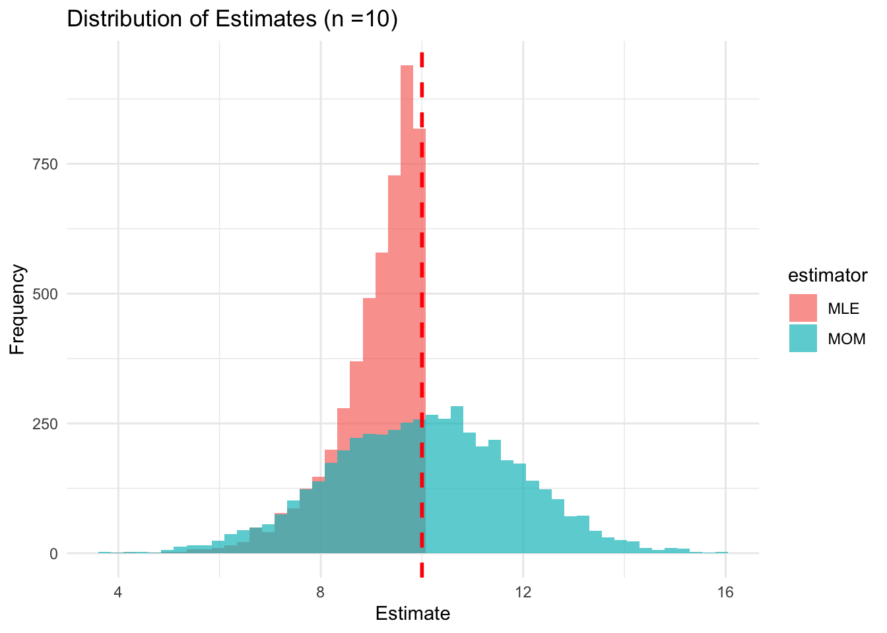
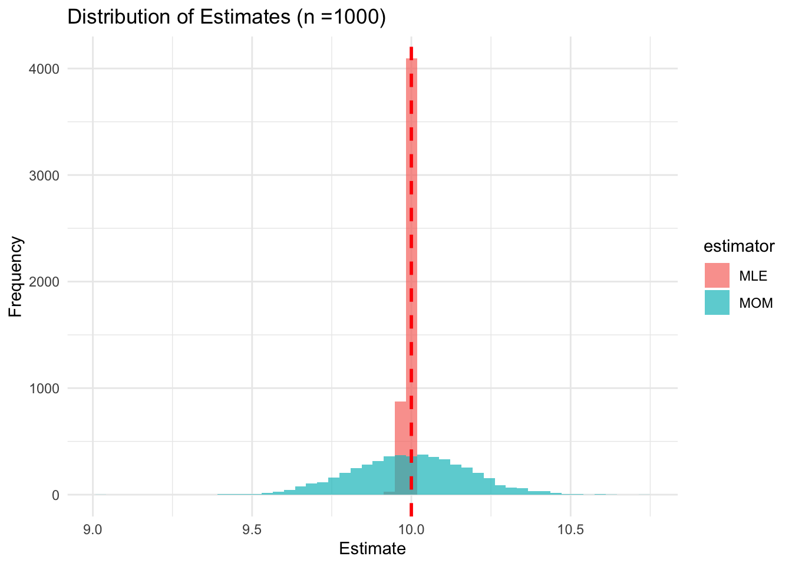
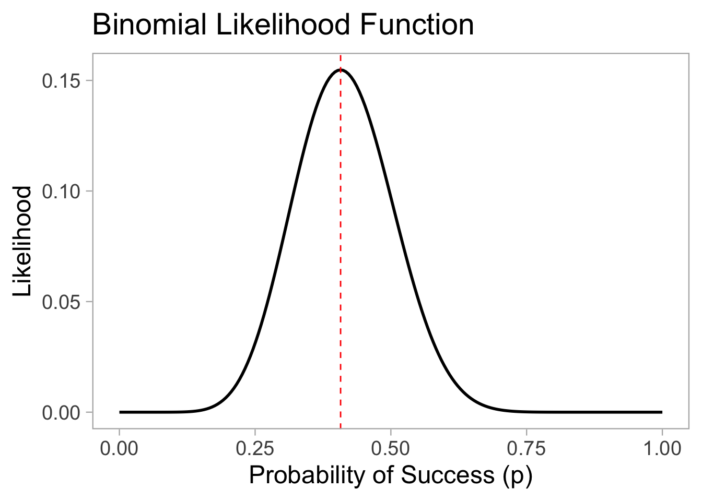
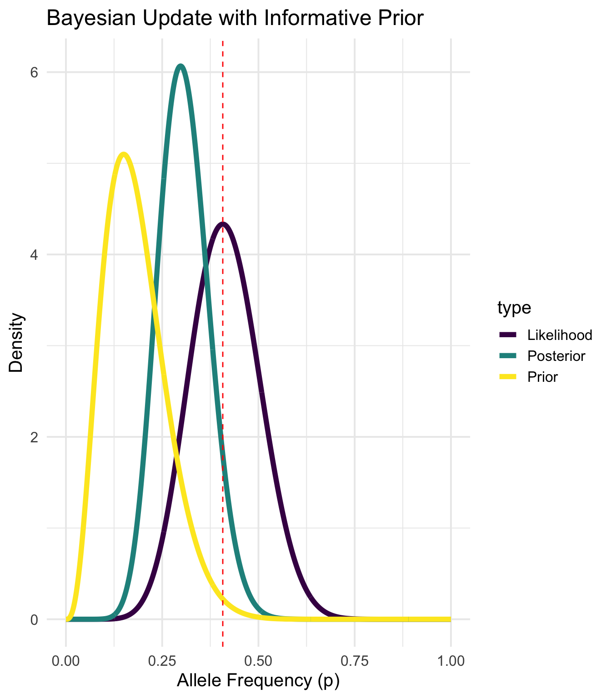
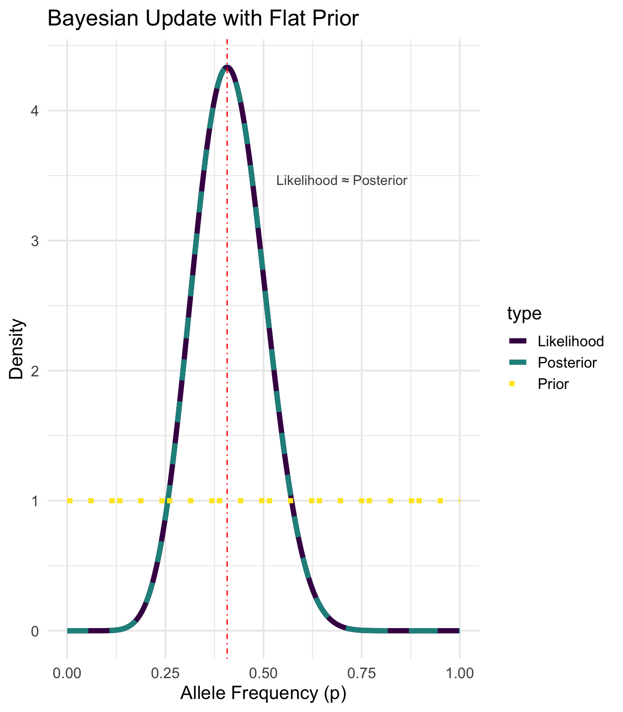
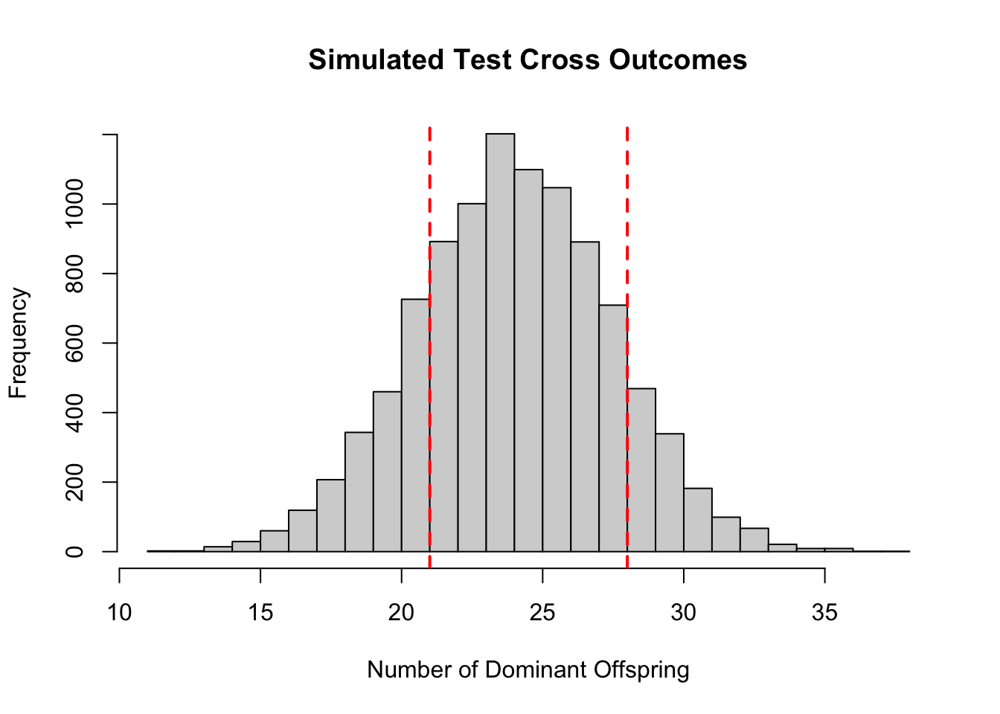
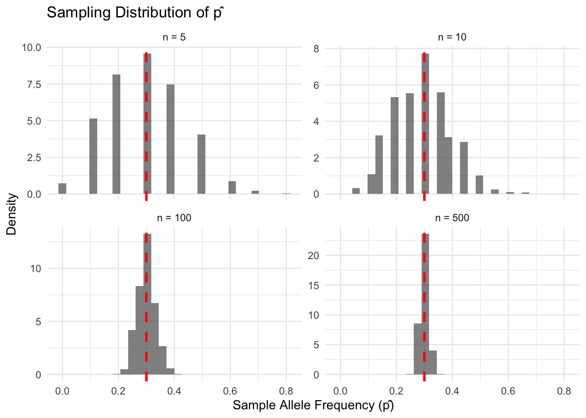

n <- 27
x <- 11
p_seq <- seq(0, 1, length.out = 200)
likelihood <- dbinom(x, n, p_seq)
plot <- ggplot(
data.frame(p = p_seq, likelihood = likelihood),
aes(x = p, y = likelihood)
) +
geom_line(linewidth = 1) +
labs(
x = "Probability of Success (p)",
y = "Likelihood",
title = "Binomial Likelihood Function"
) +
geom_vline(
xintercept = x / n,
color = "red",
linetype = "dashed"
) +
theme_light(base_size = 18) +
theme(panel.grid = element_blank())Lecture 01: Introduction and Foundations
PUBH 8878, Statistical Genetics
About the Instructors


Introductions
- Name, Degree, any other ways you like to define yourself (favorite hot dog brand, etc.)
- Current research focus or research interests.
- What you hope to get out of this course.
Course Site
Zotero

Course Logistics and Expectations
Grading Breakdown
| Assignment Type | % of Grade |
|---|---|
| Problem Sets | 60% |
| Class Participation | 20% |
| Research Project | 20% |
Total Workload: 112.5 hours (5+ hrs/week independent + 6 hrs/week class/async)
Problem Sets (60% of grade)
- Weekly assignments blending mathematical derivations with coding
- Collaborative time provided in class
- Individual work required – substantial time outside class
- Late penalty: 1% per hour (first 5 hours), then 5% per day
- Format: Mix of theory problems and R/Bioconductor analysis
Class Participation (20% of grade)
More than just showing up!
- Come prepared with questions from async materials
- Engage thoughtfully in discussions and problem-solving
- Demonstrate mastery through insightful contributions
- Collaborate respectfully - help others understand concepts
Quantitative + Qualitative Assessment: Async responses + live session engagement
Research Project (20% of grade)
Final third of semester - Choose your own adventure!
Project Types
- Computational methods
- Applied analysis
- Methodological development
- All based on primary literature
Deliverables
- Scientific paper (Genetics journal format)
- Conference-style presentation
- Groups of up to 3 encouraged
- Individual contributions must be clear
Course Structure Overview
Foundation → Scale → Specialization (10 weeks)
- Weeks 1-4: Foundations (Mendelian genetics, heritability, likelihood algorithms, population structure & Bayesian methods)
- Week 5: GWAS at scale (design, linear mixed models, meta-analysis)
- Weeks 6-7: Prediction models & multiple testing control
- Weeks 8-9: Binary traits & causal inference (Mendelian randomization)
- Week 10: Advanced AI topics in statistical genetics
Lab Component: Hands-on R/Bioconductor workflows parallel to lectures
Technology Setup Requirements
- R (4.5+) and IDE installation
- Git setup and basic commands
- Zotero for reference management
- Zoom
- Optional: HPC access
Course Textbook

What is statistical genetics?


- Population genetics is the study of evolutionary processes affecting genetic variation between organisms. A classic example is Darwin’s finches, where beak shape and size vary between islands in the Galapagos, driven by natural selection.
- Genetic Epidemiology is the study of how genetic factors contribute to health and disease in populations. A classic example is the study of genetic variants associated with diseases like diabetes or heart disease.
- Quantitative genetics is the study of continuous traits influenced by multiple genes and environmental factors. A classic example is human height, which is influenced by many genetic variants and environmental factors like nutrition. Shawn Bradley was a basketball player who as 7’6 tall, The study found Bradley had 198 more height-associated genetic variants than the average person in the sample
A statistical geneticist may want to know
- Is there a genetic component contributing to the total variance of these traits?
- Is the genetic component of the traits driven by a few genes located on a particular chromosome, or are there many genes scattered across many chromosomes? How many genes are involved and is this a scientifically sensible question?
- Are the genes detected protein-coding genes, or are there also noncoding genes involved in gene regulation?
- How is the strength of the signals captured in a statistical analysis related to the two types of genes? What fraction of the total genetic variation is allocated to both types of genes?
- What are the frequencies of the genes in the sample? Are the frequencies associated with the magnitude of their effects on the traits?
- What is the mode of action of the genes?
A statistical geneticist may want to know
- What proportion of the genetic variance estimated in 1 can be explained by the discovered genes?
- Given the information on the set of genes carried by an individual, will a genetic score constructed before observing the trait help with early diagnosis and prevention?
- How should the predictive ability of the score be measured?
- Are there other non-genetic factors that affect the traits, such as smoking behavior, alcohol consumption, blood pressure measurements, body mass index and level of physical exercise?
- Could the predictive ability of the genetic score be improved by incorporation of these non-genetic sources of information, either additively or considering interactions? What is the relative contribution from the different sources of information?
What does the data look like?
Family/Pedigree Studies

- Family studies are used to understand the inheritance patterns of traits and diseases within families. They can help identify genetic factors contributing to diseases by analyzing the occurrence of traits in related individuals.
- Pedigree charts visually represent family relationships and the transmission of genetic traits across generations. They are useful for tracking the inheritance of specific traits or diseases within a family.
What does the data look like?
Genome-Wide Association Studies (GWAS)

- GWAS are studies that look for associations between genetic variants across the genome and specific traits or diseases in a large population. They can help identify genetic factors contributing to complex diseases by analyzing the frequency of genetic variants in affected and unaffected individuals.
- Manhattan plots are visual representations of GWAS results, where each point represents a genetic variant and its association with the trait of interest. The x-axis represents the genomic position, while the y-axis represents the significance of the association (usually -log10(p-value)). Peaks in the plot indicate regions of the genome that may be associated with the trait.
Core abstractions for quantitative biology
- Model-Building
- Formulate generative models linking genotype, environment, and phenotype (e.g., linear mixed, Bayesian hierarchical, non-parametric kernels).
- Encode biological structure: linkage & LD, population stratification, dominance/epistasis, multi-omics priors.
- Balance realism and tractability to enable scalable computation on genome-scale data.

Core abstractions for quantitative biology
- Inference
- Estimate unknown parameters and latent effects via likelihood maximisation, EM, MCMC, or SGD
- Quantify uncertainty with standard errors, posterior intervals, and credible sets
- Control false discoveries across millions of tests with FDR/Q-value, permutation, and empirical-Bayes shrinkage.

Core abstractions for quantitative biology
- Prediction
- Use fitted models for out-of-sample trait prediction: BLUP/GBLUP, ridge/lasso/elastic-net, Bayesian whole-genome regressions, random forests, neural nets.
- Evaluate accuracy (MSE, AUC), bias–variance trade-off, calibration, and portability across ancestries or cell types.
- Translate genomic predictions into actionable scores for breeding, risk stratification, and drug-target prioritisation.

Core abstractions for quantitative biology
- Interpretation & Validation
- Integrate functional annotations, eQTL, and single-cell data to refine biological mechanisms.
- Perform replication, cross-cohort meta-analysis, and sensitivity analyses to population assumptions.
- Communicate findings with clear visualisations and reproducible workflows (R/Bioconductor, Git, notebooks).


Early work in the field


- Gregor Mendel (1822-1884) was an Austrian monk and scientist who is considered the father of modern genetics. He conducted experiments on pea plants and discovered the fundamental laws of inheritance, including the concepts of dominant and recessive traits, segregation, and independent assortment.
- Mendel’s work laid the foundation for the field of genetics, but it was largely ignored during his lifetime. It wasn’t until the early 20th century that his findings were rediscovered and integrated into the broader understanding of biology.
- It is hypothesized that Charles Darwin would have begun his work on evolution much earlier if he had access to Mendel’s work on inheritance.
Genetics, statistics, and eugenics, have always been closely linked


- Francis Galton (1822-1911) was an English polymath who made significant contributions to various fields, including statistics, psychology, and anthropology. He is best known for his work on eugenics, a now-discredited movement that aimed to improve the genetic quality of the human population through selective breeding.
- Galton was a cousin of Charles Darwin and was influenced by Darwin’s theory of evolution. He believed that intelligence and other traits were hereditary and could be measured and quantified. He developed statistical methods, such as correlation and regression, to study the inheritance of traits.
- Galton’s work on eugenics has been widely criticized for its ethical implications and its association with discriminatory practices, such as forced sterilizations and racial segregation
The ethics of genetics and genomics is/(was) of great importance!

Some vocabulary
- Trait/Phenotype: A measurable characteristic of an organism, such as height, weight, or disease status.
- Gene: Unit of inheritance
- Genotype: The genetic constitution of an individual, often represented by specific alleles at particular loci.
- Allele: A variant form of a gene that can exist at a specific locus on a chromosome.
- Locus: A specific, fixed position on a chromosome where a particular gene or genetic marker is located.
- Diploid: Having two sets of chromosomes (one from each parent)
- Penetrance: Likelihood of expressing a phenotype given a genotype
- Polymorphism: The occurrence of two or more genetically determined forms in a population, such as single nucleotide polymorphisms (SNPs) or copy number variations (CNVs).
- Genetic Marker: A specific DNA sequence with a known location on a chromosome that can be used to identify individuals or species, often used in genetic mapping or association studies.
Some vocabulary
- Mendelian Disease: A disease caused by a mutation in a single gene, following Mendelian inheritance patterns (dominant, recessive, X-linked).
- Linkage Disequilibrium (LD): The non-random association of alleles at different loci, indicating that certain allele combinations occur together more frequently than expected by chance.
- Heritability: The proportion of phenotypic variance in a trait that can be attributed to genetic variance, often estimated through twin or family studies.
- Genome-Wide Association Study (GWAS): A study that looks for associations between genetic variants across the genome and specific traits or diseases in a large population.
- Polygenic Score (PGS): A score that aggregates the effects of multiple genetic variants to predict an individual’s genetic predisposition to a trait or disease.
- Quantitative Trait Locus (QTL): A region of the genome that is associated with a quantitative trait, often identified through linkage or association mapping.
- Epistasis: The interaction between genes where the effect of one gene is modified by one or more other genes, influencing the expression of a trait.
Genetic Variant Example

Probability Refresher
Random Variables and Distributions
- A random variable is a numerical summary of randomness (e.g., the count of (A) alleles in a sample). We will denote random variables with uppercase letters (e.g., \(X\), \(Y\)).
- We use a model (e.g., binomial/multinomial) to describe how data vary from sample to sample.
- This is otherwise known as a probability mass function (pmf) for discrete variables, or a probability density function (pdf) for continuous variables
- Key ideas:
- Expectation (mean) and variance: long‑run average and spread.
- \(E[X] = \sum x \cdot P(X = x)\) (discrete) or \(E[X] = \int x f(x) dx\) (continuous)
- \(\textsf{Var}(X) = E[(X - E[X])^2] = E[X^2] - (E[X])^2\)
- Standard error (SE): typical sampling variability of an estimator.
- \(\textsf{SE} = \frac{\sigma}{\sqrt{n}}\) (uncertainty in sample estimates)
- Central Limit Theorem (CLT): averages and proportions are roughly normal for large (n).
- \(\bar{X} \sim N\left(\mu, \frac{\sigma^2}{n}\right)\) as \(n \to \infty\)
- Expectation (mean) and variance: long‑run average and spread.
Probability Distributions vs Sampling Distributions
- A probability distribution describes how a random variable behaves in the population.
- Example: \(X \sim \textsf{Binomial}(n, p)\)
- A sampling distribution describes how a statistic (e.g., sample mean, sample proportion) behaves across repeated samples from the population.
- Example: \(\hat{p} \sim N\left(p, \frac{(p(1-p))}{n}\right)\) as \(n \to \infty\)
Probability Refresher
Key Distributions in Statistical Genetics
Binomial Distribution \[X \sim \textsf{Binomial}(n, p)\] \[P(X = k) = \binom{n}{k} p^k (1-p)^{n-k}\]
Used for: Allele counts
Normal Distribution \[X \sim N(\mu, \sigma^2)\] \[f(x) = \frac{1}{\sqrt{2\pi\sigma^2}} e^{-\frac{(x-\mu)^2}{2\sigma^2}}\]
Used for: Quantitative traits, effect sizes
Conditional Probability and Independence
- Conditional Probability: \(P(A|B) = \frac{P(A \cap B)}{P(B)}\)
- Bayes’ Theorem: \(P(A|B) = \frac{P(B|A)P(A)}{P(B)}\)
- Independence: \(P(A \cap B) = P(A) \cdot P(B)\) \(\iff\) \(A\) and \(B\) are independent
Conditional probability and Bayes’ Theorem are crucial for understanding rare disease genetics! For example, consider a rare disease with a prevalence of 1 in 10,000. If a genetic test has a sensitivity of 99% and a specificity of 99%, we can use Bayes’ Theorem to calculate the probability that an individual has the disease given a positive test result.
\[\begin{align*} P(Disease|Positive) &= \frac{P(Positive|Disease)P(Disease)}{P(Positive)} \\ &= \frac{(0.99)(0.0001)}{(0.99)(0.0001) + (0.01)(0.9999)} \\ &\approx 0.0098 \end{align*}\]
Parameter Estimation
- Imagine a geneticist is studying allele ages (i.e., how many generations ago an allele arose via mutation) under a simplified model where new mutations arise randomly and uniformly over a fixed window — say, the last \(\theta\) generations.
- We could model \(X \sim \textsf{Uniform}(0, \theta)\).
- We have our observed sample \(\{x_1,x_2, \ldots, x_n\}\), ages in generations of \(n\) observed alleles.
- For concreteness, let our sample be \(\{0, 1, 8, 4, 3, 7, 7, 6\}\).
- How should we estimate \(\theta\) ?


Genetic Models
- Understanding random variables, sampling distributions, and bias/variance of estimators helps motivate biological questions, and understand how they can be answered
- Let y be the expression of a trait, G be the additive contribution of genetic variables, and an environmental value E;
- What assumptions do we make via the following models?
\[\begin{align} y &= G + E \\ y &= \beta_0 + \beta_1 G + \beta_2 E + \epsilon \\ y &= \beta_0 + \beta_1 G + \beta_2 E + \epsilon, \quad \epsilon \sim N(0, \sigma^2) \\ y &= \beta_0 + \beta_1 G + \beta_2 E + \beta_3 \left(G \times E\right) + \epsilon, \quad \epsilon \sim N(0, \sigma^2) \end{align}\]

Modeling
- Imagine that we have a sample size of \(n\) unrelated haploid individuals from some population
- We want to estimate allele frequencies for a biallelic SNP, say A/a
- In our sample, we observe \(x\) individuals with allele A and \(n - x\) individuals with allele a
- Let \(p\) be the frequency of allele A and \(q = 1 - p\) be the frequency of allele a
\[Pr(X = x| n, p) = \binom{n}{x} p^x q^{n - x}\]
- Lets say we observe \(n = 27\) and \(x = 11\). How do we estimate \(p\)?
Likelihood Functions
The likelihood function is a function of the parameters of a statistical model, given specific observed data.
It represents the plausibility of different parameter values based on the observed data.
For a given set of data, the likelihood function is defined as: \[L(\theta | data) = P(data | \theta)\]
In our case, the likelihood function for \(p\) is: \[L(p | x = 11, n = 27) = P(X = 11 | n = 27, p) = \binom{27}{11} p^{11} (1 - p)^{16}\]
We are asking, “how likely is it that we would observe this data for different values of \(p\)?”
Maximum Likelihood Estimator
Our likelihood function for \(p\) is
\[L(P|x = 11, n = 27) = {27 \choose 11} p^{11} q^{27-11}\]

Modeling, but make it bayesian
- In Bayesian statistics, we treat parameters as random variables and use probability distributions to represent our uncertainty about them.
- We start with a prior distribution that reflects our beliefs about the parameter before seeing the data.
- We then use the observed data to update our beliefs and obtain a posterior distribution.
- The posterior distribution combines the information from the prior and the likelihood of the observed data using Bayes’ theorem: \[P(p | data) = \frac{P(data | p) P(p)}{P(data)}\]
- Let’s say we have run a previous experiment and observed \(n = 20\) individuals and \(x = 3\) individuals with allele A (again, bilelic SNP).
- We can use this information to inform our prior distribution for \(p\)
Modeling, but make it bayesian
p <- seq(0, 1, length.out = 1000)
# Prior (Beta distribution from previous experiment)
prior <- dbeta(p, 3 + 1, 17 + 1)
# Likelihood (Beta distribution from current data)
likelihood <- dbeta(p, 11 + 1, 16 + 1)
# Posterior (Beta distribution combining both)
posterior <- dbeta(p, 14 + 1, 33 + 1)
# Combine into a data frame
plot_data <- data.frame(
p = rep(p, 3),
density = c(prior, likelihood, posterior),
type = rep(c("Prior", "Likelihood", "Posterior"), each = length(p))
)
# Add flat prior distribution
flat_prior <- dbeta(p, 1, 1)
flat_posterior <- dbeta(p, 12, 17)
plot_data <- rbind(
plot_data,
data.frame(
p = rep(p, 3),
density = c(flat_prior, likelihood, flat_posterior),
type = rep(c("Prior", "Likelihood", "Posterior"), each = length(p))
)
)
# Add a column to distinguish between informative and flat scenarios
plot_data$scenario <- c(rep("Informative", 3000), rep("Flat", 3000))p1 <- ggplot(
plot_data %>% filter(scenario == "Informative"),
aes(x = p, y = density, color = type)
) +
geom_line(linewidth = 2) +
geom_vline(xintercept = 11 / 27, linetype = "dashed", color = "red") +
labs(
x = "Allele Frequency (p)",
y = "Density",
title = "Bayesian Update with Informative Prior"
) +
scale_color_viridis_d() +
theme_minimal(base_size = 15)p2 <- ggplot(
plot_data %>% filter(scenario == "Flat"),
aes(x = p, y = density, color = type, linetype = type)
) +
geom_line(linewidth = 2) +
scale_linetype_manual(values = c("Prior" = "dotted", "Likelihood" = "solid", "Posterior" = "dashed")) +
geom_vline(xintercept = 11 / 27, linetype = "dotdash", color = "red") +
labs(
x = "Allele Frequency (p)",
y = "Density",
title = "Bayesian Update with Flat Prior"
) +
theme_minimal(base_size = 15) +
scale_color_viridis_d() +
annotate("text",
x = 0.7, y = max(flat_posterior) * 0.8,
label = "Likelihood ≈ Posterior", color = "gray30"
)

Mendel’s Laws
Mendel’s First Law (Segregation)
One allele of each parent is randomly transmitted, with probability 1/2, to the offspring; the alleles unite randomly to form the offspring’s genotype.
Mendel’s Second Law (Independent Assortment)
At different loci, alleles are transmitted independently (when loci are unlinked).

- Mendel’s First Law, the Law of Segregation, states that during the formation of gametes (sperm and egg cells), the two alleles for a given gene separate, so that each gamete receives only one allele. This means that each parent contributes one allele to their offspring, and the combination of these alleles determines the offspring’s genotype.
- Mendel’s Second Law, the Law of Independent Assortment, states that alleles for different genes are transmitted independently of one another, provided the genes are located on different chromosomes or are far apart on the same chromosome. This means that the inheritance of one trait does not influence the inheritance of another trait, allowing for a variety of genetic combinations in the offspring.
Worked Example: Segregation (3:1 Ratio)
Cross: Aa × Aa
Punnett Square
| A | a | |
|---|---|---|
| A | AA | Aa |
| a | Aa | aa |
Expected Ratios
- Genotypic: 1 AA : 2 Aa : 1 aa
- Phenotypic: 3 dominant : 1 recessive
- Probabilities: \(P(AA)=\frac14, P(Aa)=\frac12, P(aa)=\frac14\)
Test Cross Example
Proving law of segregation with a test cross
Example data:
- Cross: Aa × aa
- Observed: 21 dominant, 28 recessive
- Null hypothesis: Probability of transmission is 1:1.
- Alternative hypothesis: Probability of transmission is not 1:1.
- How to test this?
Our question is related to observation of proportions –> use a chi-squared goodness-of-fit test or a binomial test.
Test Cross Example
observed_testcross <- c(21, 28) # Dominant, Recessive
chisq_test <- chisq.test(observed_testcross, p = c(0.5, 0.5))
chisq_test
Chi-squared test for given probabilities
data: observed_testcross
X-squared = 1, df = 1, p-value = 0.3173Testing via Simulation
We could also simulate our idea of the null hypothesis to get a sense of how extreme our observed data is.
set.seed(123)
n_sim <- 10000
N <- 49
simulated <- rbinom(n_sim, N, 0.5)
p_value_sim <- mean(simulated <= 21 | simulated >= 28)
p_value_sim[1] 0.3868hist(simulated, breaks = 30, main = "Simulated Test Cross Outcomes", xlab = "Number of Dominant Offspring")
abline(v = c(21, 28), col = "red", lty = 2, lwd = 2)
On Simulations

Estimation of Allele Frequencies
\(n_{AA}\) = Number of individuals with genotype AA \(n_{Aa}\) = Number of individuals with genotype Aa \(n_{aa}\) = Number of individuals with genotype aa
where, \(n = n_{AA} + n_{Aa} + n_{aa} = N\).
The sample proportions of allele \(A\) is:
\[ \hat{p} = \frac{2n_{AA} + n_{Aa}}{2n} \]
The usual standard error for a proportion is \(\sqrt{\hat{p}(1 - \hat{p})/2n}\), but this assumes independence of the \(2n\) sampled chromosomes.
Hardy–Weinberg Equilibrium (HWE): Assumptions
Let’s reframe the problem in terms of genotype frequencies. First, some assumptions:
- Random mating
- Large population (no strong drift in one generation)
- No selection, no migration, no mutation (in the generation under study)
- Accurate genotypes (no systematic genotyping error)
If these hold, and the allele frequency of \(A\) is \(p\) (so \(q = 1-p\)), we say that the population is in Hardy-Weinberg Equilibrium (HWE). The population genotype probabilities are:
\[ P(AA)=p^2 \quad P(Aa)=2pq \quad P(aa)=q^2 \]
As a consequence, the genotype frequencies in a random sample of \(n\) individuals are approximately multinomially distributed with cell probabilities \((p^2, 2pq, q^2)\). Thus, the sampling error of \(\hat{p}\) is approximately \(\sqrt{p(1-p)/2n}\).
This confidence interval is known as a Wald confidence interval.
Testing for HWE
- With large samples, we can test for HWE using a chi-squared goodness-of-fit test.

HWE: Worked Example
n <- 212
n_AA <- 175
n_Aa <- 33
n_aa <- 4
# Estimate allele frequency
p_hat <- (2*n_AA + n_Aa) / (2*n)
q_hat <- 1 - p_hat
p_hat[1] 0.9033019# Expected counts
expected <- c(n * p_hat^2, 2*n * p_hat*q_hat, n * q_hat^2)
observed <- c(n_AA, n_Aa, n_aa)
expected[1] 172.982311 37.035377 1.982311# Pearson chi-squared
chisq_val <- sum((observed - expected)^2 / expected)
df <- 3 - 1 - 1
p_val <- pchisq(chisq_val, df = df, lower.tail = FALSE)
p_val[1] 0.1126299HWE in Practice
- HWE is a useful null model for quality control of genotype data.
- Deviations from HWE can indicate genotyping errors, population stratification, or selection
Sampling distributions: intuition via simulation
set.seed(123)
true_p <- 0.3
sample_sizes <- c(5, 10, 100, 500)
n_sims <- 1000
sampling_results <- map_dfr(sample_sizes, function(n) {
p_hats <- replicate(n_sims, {
# Sample n individuals (2n alleles total)
alleles <- rbinom(n, 2, true_p) # each individual contributes 0,1,2 A alleles
sum(alleles) / (2 * n) # sample allele frequency
})
tibble(sample_size = n, p_hat = p_hats,
theoretical_se = sqrt(true_p * (1 - true_p) / (2 * n)))
})Sampling distributions: intuition via simulation
# Plot sampling distributions
ggplot(sampling_results, aes(x = p_hat)) +
geom_histogram(aes(y = after_stat(density)), bins = 30, alpha = 0.7) +
geom_vline(xintercept = true_p, color = "red", linetype = "dashed", linewidth = 1) +
facet_wrap(~sample_size_name, scales = "free_y") +
labs(title = "Sampling Distribution of p̂", x = "Sample Allele Frequency (p̂)", y = "Density") +
theme_minimal()
References
Downey,A.B. (2015) Think stats: Exploratory data analysis in python 2nd ed. O’Reilly Media, Sebastopol, CA.
Laird,N.M. and Lange,C. (2011) The fundamentals of modern statistical genetics Springer, New York, NY.
Sorensen,D. (2025) Statistical learning in genetics: An introduction using r 2nd ed. Springer, Cham.